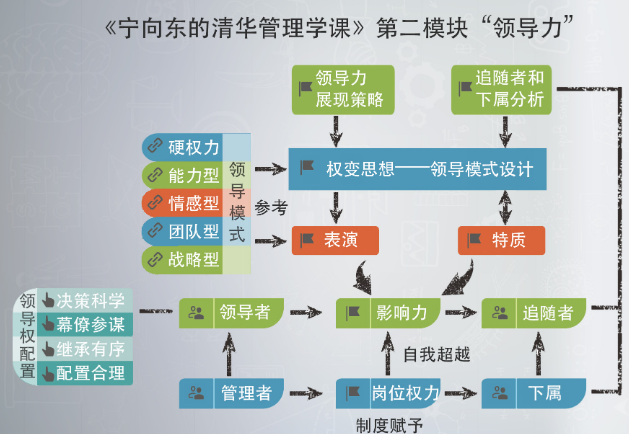

宁向东-管理学课（四）领导力
领导力总结：
1.领导者，不是靠岗位权力生存和工作的，他要走进下属的内心，要利用影响力把下属发展成为追随者。领导力，一旦变成了追随力，就会创造领导者自己也意想不到的效果，一种成几何倍数的业绩。【创造影响力的关键方式，是透过专业能力和魅力的展现】当然，具体的策略很多，包括在工作过程中展现、通过建构关系来展现，以及借助于工具来展现。每个人都需要通过塑造自己的领导模式，来领导追随者和下属，达成组织的愿景，实现组织的目标
2.根据情况选择领导模式：权变”思维，是管理学科最重要的一个概念。一个组织、一个领导者该选择什么样的领导模式，其实，是权变的，是需要根据情况自我设计的。不仅仅是在领导模式设计上，在任何的管理问题上，领导者都需要懂得因时因地、有所区分地解决问题。而在领导模式上，权变思维的核心，就是要从追随者特征和领导情境这两个方面做文章，寻找一个恰当的实现方式。
3.不管你怎样对下属分类，核心要点是要抓住下属的动机、愿望和内心，通过有效的方式，带动最多的下属。
4.好的领导者，要善于用你的价值观和领导模式去影响最多的追随者，同时还要学会运用“个性领导”的方式，抓住关键的少数。
5.一定要记得：成为一个优秀领导者的秘诀，就是练习。当你演了一百遍之后，你演的就是你自己。
6.领导者一定要勇于担责；但担责不是简单地揽下问题，那是悲剧式的担责，担责是指对结果负责，而且是不断获得好结果的过程。对勇于担责，领导者要敢于说了算，重大事项要敢于坚持原则，敢于拍板。而为了防止决策失误，要善于搜集信息，利用他人的智慧，要根据情况建立你能够承受住成本的顾问队伍。记得：硝烟是在千里之外，但决胜的真正舞台是在帷幄之中。

【第34天： 备份领导力|内部的外部人 20201020，周二】
1.爱迪生所创建的GE公司
2.选择接班人：琼斯不是要挑一个和自己一模一样的 “ 乖乖仔 ” ，而是要挑选一个能够带领公司 “ 走出自己 ” 的领导人。我觉得这一点，是很值得你我共勉的。最好的接班人一定不能是自己的复制品，而应该有超越自己的勇气，这样才有可能迎接更加艰巨的新挑战
3.“内部的外部人”。大意是说，一个好的接班人，应该是对企业内部情况特别熟悉、对组织有足够忠诚度的人。所以首先，他应该是个内部人。但是，这个人对于企业一定要具有批判精神，他应该有到处都看不惯的劲头，就像是一个外来的人。
4.人对了，什么事，还没有做，就对了一大半；而人不对，往往事倍功半。
【第33天：谋划力|正在的舞台在后面 20201013，周二】
领导者要有效地利用幕僚的管理之道.
【第32天：领导权配置|一个人说了算好不好 20201012，周一】
一.“一个人说了算”也要讲方法
1.大家先进行充分的讨论，讨论不仅仅是班子成员，开始的时候还涉及到一些中层干部
2.是班子成员关起门来讨论，内容开始收敛，老板开始有了一定的倾向性。开这个会的主要目的：一是归纳前面几次会上的意见，更重要的是老板希望形成一定的共识，如果真的最后收购了那家企业，班子里不能有杂音
3.是决策阶段。和关键的人进行讨论即可。
二.“一个人说了算”也有缺点
1.信息会非常有限。一个人说了算，还要保证把事情做对，就要充分听取他人的意见和建议。即使是我不知道这件事是怎么回事，但是我知道谁知道这件事是怎么回事。能找对人去问，其实是个大本事。
2.找对人之后，要善于进行沟通。分阶段：先大众讨论再局部高层讨论最后决策。
3.要学会只让有关的人参与决策。人太少了不好，过多了也不行，会干扰领导者作出正确的判断。如果你已经是一个领导者了，要学会形成自己的幕僚班子。如果你还不是一个领导者，你被领导喊去参加座谈会，或者参加业务问题的讨论，其实，你已经进入到领导的幕僚视野了。
【第31天：领导争锋|为什么合伙制不长久 20201009，周五】
按照经济学的基本法则，企业就是一个 “ 资源集合 ” ，所有参与企业的人，都是提供他们的资源，然后获得相应的回报，这是企业本质。很多资源都是可以定价的，比如，员工的劳动是资源，他获得工资和奖金，事先都可以明确约定。但是，有一样最核心的资源是无法约定的，就是股东所投入的人力资本。
和他人组建有限责任公司、合伙企业等等，本质上都属于资源合作，一定要想到什么时候资源的互补性就消失了，而资源互补性消失的那一天，就是股东有了散伙基础的时刻。
几个兄弟合伙创业，在当下很常见。我以为，无论是创业前，还是在创业过程中，如果能够从新东方的故事中，汲取到有价值的养分，那是一种福气。现在，太多人都是头脑一热，几个弟兄就拉起了杆子，办起了公司。没有人也没有钱的时候，选人和定股份这两件最重要的事情，极容易被忽视，等到公司开始走上正路，业绩不断变好之后，才发现选错了伙伴，定错了股权。这时，解决问题的成本变得太大了。
【第30天：中层领导力，画圆的艺术 20201008，周四】
管理者的技能一共有三类：技术性能力、人际性能力和概念性能力。管理的层级不同，对这些技能的要求也不一样
一.基层领导者
成为基层的领导者，技术性能力依然是最重要的，但你要开始注意培养自己的 “ 人际性能力 ” 。人际性能力，用专业的语言说，就是跟他人进行沟通、协调、组织合作的能力。这又可以细分为纵向能力和横向能力：
1.纵向能力是上下级沟通的人际性能力；
2.横向能力是同级协调各个部门的人际性能力。
它们有一点区别，当你在基层岗位的时候，纵向的人际性能力会使用得比较多； 但是，你越往上走，真正成为中层、高层领导者的时候，横向的人际能力就变得格外重要了。
概念性能力呢？就是一种综合分析局面，找出趋势，找出时机，找出方向，找出目标的能力。对于一个组织来说，概念性能力是最难的能力，但却是成为高层领导者所必须具备的能力。
对于一个组织的高层领导者来说，概念性能力是最重要的，比人际性能力重要，也比技术性能力重要。作为中层管理者，你要继续进步的话，其实就要锻炼自己的概念性能力。
二.中层领导者-画圆和摆圆的能力：中层的任务就是帮助高层能够把力量实现整合，把员工的那个圆用好。

1.要建立“平衡点”意识，要学会通过平衡点尽可能把纵向的三个圆的圆心往一起拉。中层管理者上任的第一天，就要在心里画好这三个圆。高层的圆，自己的圆，以及下面兄弟的圆。
当任务来了之后，你在简单地传递任务之前，第一步要想的，就是如何在这个任务下面把这三个圆串成一个链条，通过一个平衡点调整不同圆心的位置，让这三个圆之间的交叉面积最大。你要去想象怎么能做到老板赢，自己赢，兄弟赢。你一定要记得这三赢是统一的，老板赢，兄弟赢，才是你赢。任何一方输了，最后可能都是你输了。
2.要建立“大局”意识，学会用老板的小圆去拉动相关部门的圆，就是刚才说的旁边的那个圆。
比如，对待高层交办的事情，有的时候要借用相邻部门的资源，但是，你可能调动不了，我们中国是一个地盘文化，这个不用多说。按照制度调度资源是没有问题的，但是，现实情况就是相关部门会不配合。不要轻易对老板说“我做不了”。 你可以使用这样的句式：“这个任务，可能得您挂帅，我先试试，我估计只靠我们部门可能会有困难，但是，我知道这件事对公司很重要，我先尽力努力吧。”也就是说，你先要表明态度是非常积极的，但是，你回去以后可以先试试，跟相关的部门以及下属商量、沟通一下，但你十有八九可能办不成。
如果你现在要做的这个事，是老板圆中的核心问题，担责就是要体现从老板的角度提出跨部门的解决方案。而且，你站得够高，也会被认为是可以培养的潜力型人才。
3.除了画圆，中层领导力还有其他的内容，比如如何整合人际关系。我发现，很多中层管理者还不懂得如何向领导进行汇报。
比如，不要在事情处于工作节点之前才去汇报，应该给老板预留出解决问题的时间。举一个具体例子，有一个中层领导者，他选择在周五下班之前去汇报，这就不好，这是大家都准备过周末的时间，老板听到汇报以后，他决定立即开个会来解决这个问题，于是，与这个事情相关和不相关的部门都被老板喊来开会。这就导致大家对这个工作很反感，后面的事情就会变成一碗夹生饭，这就是不会沟通。
【第29天：女性领导力 20201007，周三】
当你面临困难的时候，时间会给你作出最好的建议。让时间筛除掉那些经不起时间检验的选项，最后留下来的一定是无可替代的招法。
女性领导者的核心差异体现在她们更多地显现出“民主参与式”的领导风格，而男性领导者则更多地显现出“硬权力”和“威权式”的领导风格。
一.女性领导者的特质
1.男性领导者更倾向于从自己的角度出发想问题、作判断，沟通工作不如女性；而女性则比较注意跟大家沟通，这样就能够有全面的信息，能够更好地对这些信息进行整合，所以女性在整合力上，有着特质上的优势。
2.女性的韧性特别强，持久力也比较好，所以，当面对多数人都认为做不到的事情时，她们的信心和进取心反而更高，这往往会导致意料之外的结果。
3.女性的耐性十足，更善于倾听，她们也更愿意跟别人分享自己的意见，所以问题经常就会被讨论得比较充分。这就导致了她们在决策的过程中，可以听到更多的声音，也可以更加全面地去作决定。
4.女性具有更强的牺牲精神，所以，她们更容易为一件她们认为值得的事冒险。这可能跟女人的生育过程有关，女人的生育过程，其实就是一个死去活来的过程。所以，女性更容易把那些沉重的负担，变成前进的动力
思考：在处理同事关系这件事上保有了较强的母性特征，但是，在决策行为上却表现出比男性还要强烈的原则感和坚定感。
【第28天：创业领导力 20200912，周六】
一. “ 未来 、现场、吃饭 ” ，这样六个字，我觉得是每个创业者都需要的，也是创业领导力的核心。
1.创业领导者要以未来做支点，创业者更要用未来做支点。我们常常引用阿基米德的话：给我一个支点，我能撬动地球。但是，支点选在哪里呢？对于创业者来说，支点就是未来。
2.影响他人的能力中的三个关键要素：专业能力、魅力和奖赏，对于一个创业者来说，你有什么？奖赏的钱，你也许能给别人多一点，但能多到哪去呢？应该也多不了多少；专业能力，如果你总不在现场，下属终究会超过你。其实，你最能影响他人的，是你的背影。不是你当甩手掌柜，离开公司的背影，而是你趴在工作台前，努力工作的背影，那是你的魅力所在，对于你的追随者，那是无法拒绝的。所以现场，对于你的魅力展现，对于你的专业能力，是极其重要的。
3. 和员工吃饭，是老板最大的学问之一，创业者要格外注意：每一顿饭，都是工作。
饭桌上，有两种吃的东西，一种是饭菜，你要品滋味，另一种是员工的话，它也是饭菜，你也要品滋味，而且还要把滋味记住。我和你分享的一个观念是：你要听出三种话，带有你理解的员工的话，你听到的员工所说的话，和他头脑中想说的话。这三种话是不一样的，打个比方，他头脑中想说的话，是水箱里面还没做的鱼；他说出来的话，是做好了端上来、在你眼中可以吃的鱼；而你理解到的、他话中的意思，是你嘴里正在吃的鱼。嘴里吃着鱼，你还能想到鱼在水缸里游动的样子吗？那就是倾听员工讲话的功夫。
【第27天：领导模式实现 20200831，周一】
一. 模式实现的三步走策略。
把领导力转化为追随力；
>>衡量一个人领导力强不强，看的是他能把多少人转化为追随者;
>>领导者的一个重要功夫，是要善于把自己的领导力，转换成下属的追随力、创造力，然后由下属转化为业绩。
用价值观牵引最多的下属；
>>调整的原则很简单，就是想办法让更多的人和自己的频率相通。无论是先改变观念，还是先改变行为，总之，就是要让频率相通，如果多数人频率不通，作为领导者，仅仅沟通一项，就会被累死。
>>就是下属之所以会追随领导者，不是认同了你说的，纸上印的，而是认同了你是如何做的，所以，领导者要格外注意种种行为背后所隐藏的价值观。
省出精力和时间，用个性领导的方法，抓住重点人物。
一. “权变（contingency）”。权变，说得简单点就是见机行事，要懂得因时因地、有所区分地解决问题。用专业一点的术语来说，权变领导，就是要在领导行为、追随者特征和环境之间寻找一个平衡点，以达到有效影响他人、完成组织任务的目的。
二. 很有道理的思想：
麦克法兰：领导越大，越没有熟悉细节和学习新知识的时间，所以领导往往都是一知半解，那如何用自己的 “ 一知半解 ” 来和专业人士沟通，然后让自己有更多的精力来把握大方向，这是一种本事。
三. 总结：
核心思想“看情况”：根据不同的下属特性作出不同的领导风格、指导、激励等！
下属不仅能够完成工作，更可贵的是向上反馈错误，及时改进领导的错误！

【第25天：战略性领导 20200810，周一。】
一. 选择做正确的事，找到正确的方向，这是战略管理的关键，也是建立战略型领导模式的基础。
在这个访谈里，你可以看到乔布斯的真实想法。乔布斯说：我不在乎犯错，我承认我做错了很多事。但是，有太多事情，对我真的不重要，对我真正重要的只有一件事：就是我是不是做了正确的事。
二.当你真正找到优秀人才的时候，他们真正喜欢在一起工作，你不需要小心翼翼地呵护他们的自尊心，他们也不需要你的呵护，因为大家都明白，工作结果才是最重要的。
三.找到第一流的人，才能做第一流的事情。而要能够引领第一流的人去忘我地投入到工作之中，就一定要建构一个愿景，让他们知道他们正在做着改变历史的事情。这是乔布斯式“战略型领导模式”的秘诀，你如果要建立“战略型领导模式”，也应该参考这一点。
【第24天：团队性领导 20200809，周日。】
一. 中央集权式的领导方式，最大的问题就是信息的搜集和处理能力必须要特别强。就以超级细胞公司为例，CEO要去作决策，面临三个大的障碍：
1.他要在公司内部建立起一个有效搜集信息的渠道，将近200个员工方方面面的信息都要及时汇集到他那里；
2.他要能够及时处理这些信息，然后形成正确的决策。这对于他的能力，特别是判断力要求特别高，碰巧他所学的专业是管理，对于游戏业务，其实并不是很了解，所以，宏观上把握公司是他的强项，具体问题的处理是他的弱项。这就构成了一个几乎不可逾越的障碍；
3.中央集权的领导方式，要求任务落实下去，必须有强大的监控体系和监控能力，而软件开发行当，在很多时候没法判断对与错、是与非，这也是CEO无能为力的地方。所以，他索性采用了彻底分权的方式，把公司的领导权化整为零，交给团队，在公司建立起团队型的领导模式。
要确立团队型领导模式，关键人物是大老板。大老板必须要明白什么是自己可以做的，什么是自己做不了的。如果自己做不了，别人可以接，你就要学会请人做、彻底放权，自己只管过程是否合规，结果是否令人满意。如果是组织必须要做的，但又没有哪一个人能胜任，就必须要靠一个群体，这时候就像超级细胞这种情况，就要建立团队型的领导模式。
二.团队型领导模式有两种不同的形式：
第一种是有一个牵头人，团队成员更多地介入；
第二种就是像超级细胞这样的组织，权力完全交给团队成员。
德鲁克曾经说过一句话：我们用太多的时间去告诉领导人该做什么，我们却没有足够的时间去告诉他们不要做什么。今天的课后，我请你花点时间想一下，你需要不去做什么。有一个原则，我分享给你：成功的企业，好主意一定是聪明人出的，不一定是最有权力的人出的。如何创造一种组织和文化，让公司里面想得最好、说得最对的人去作决定，这是领导者最该做的事情。
三.如何建立团队领导力？
1.团队型领导模式的核心，是权力配置方式的根本改变。首先，它是把权力从一个人或极少数人配置到多数人手上；其次，它也是把权力从管理者手中配置到工作者手中。
2.存在两种团队型领导模式：一种是有牵头人，但不拥有绝对权力；另一种是没有牵头人，全体共治。这两种团队模式在成员规模、运行机制上有很大不同，所以，团队领导模式也应该不同。这一点必须要再强调一下。在全体共治的模式下，人员数量（或者核心人员的数量）不宜过多。有人说5到7人比较合适。团队人员如果规模过大，组织效率遭遇的挑战就越大。相反，在有牵头人的团队中，人员可以适当多一点，不过要防止牵头人使用权力过多，不利于实现这种组织的初衷
3.在团队型领导模式中，每一个人都有义务对其他人的问题负责，而不是简单地把它交给岗位意义上的牵头人。如果组织内部最后的结果是没人负责，牵头的人也负不了责，成员们在组织内部互相推诿，甚至三心二意、流动率居高不下，组织就没有稳定性。应该说，这就是团队型领导力没有建立起来的标志。在这种情况下，就要考虑退而求其次，选择其它的领导模式。
【第23天：情感性领导|选亲还是选贤人 20200808，周六。】
一.为什么新官上任都会“任人唯亲”？所有的管理者其实都是从没有经验走上领导岗位的。当一个人走上领导岗位之后，他会遇到两个主要问题：
下属不服气。特别是有些下属认为你现在坐的位置，是应该由他来坐的，他们会充满着一腔的敌意。有些人虽然表面不说，但心里却期盼你新官上任三把火，先烧了自己，所以他们往往不太配合。
下属在工作方式上与你的工作方式的出发点和思考方式会有不同。所以，即使没有不服气，有的时候双方在沟通上，他也会不听你的，或者是阳奉阴违。
分析：
用自己信得过的人、用熟人，往往是特定时间里巩固自己领导地位的一条捷径，工作很容易推进。因为在信息不对称的情况下，了解和熟悉一个新人是需要花时间的，在很多情况下，领导者不可能有时间慢慢选拔人才，所以，用熟悉的人，相对于花时间盯人、控制人，时间成本会少很多。一方面，因为了解和信任，领导者会对结果比较放心；另一方面，所有的关系和圈子都是双向的，如果被重用的下属不尽力，他其实也会在声誉上遭受较大的损失。所以，采用情感型领导模式在很多时候是有道理的。
二.选才标准：
李嘉诚先生看能力就特别强调“两不用”：那些名气大、喜欢自我标榜、凡事以“自我表演”为中心的“企业明星”不用；还有，就是光有忠诚心，但能力不足的人，他也不用。
如果你预见到，团队以后要进步，要不断引进有能力的高手，那么，你在第一阶段使用人员的时候，对有忠心，但能力稍差的人，就应该有所考虑。比如，你在提拔副手，或者骨干的时候，你就不仅仅要从解决当下问题的角度想事，还要多看几步。如果可以用短期激励来解决问题，就不要拿将来的岗位来交换。再比如，一部分人的能力不行，但忠心可嘉，喝酒鼓舞士气的时候，就不要在位置上给他们一些预期
三. 如何让有能力的人产生忠心？
1.是讲诚信。李嘉诚的诚信到了什么程度呢？他与生意伙伴的口头协议，亏了本，都要照原价履行。他自己追求的境界，是希望敌人都相信你。你想，敌人、生意伙伴都信服，下属焉有不服的道理？
2.是要努力追求新的知识、了解一线的信息，然后去和有能力的人沟通。其实，再有能力的人都愿意和上级沟通、表达自己的想法，就怕领导者拒之千里。只要领导者肯于放下身段，肯花时间，能人是愿意把你讲明白，进而展示自己能力的。所以，肯与下属交流，是一种吸引人追随的人格特质。
【第22天： 能力型领导|防止被推下山崖 20200806，周四。】
一. 人的精力是有限的，分配精力其实是要考虑回报率的，只有把精力配置到回报率比较高的事情上，人的生命才过得比较划算。企业小的时候，做成了一单业务就是大事，所以要算计一小时能挣多少钱。当企业做大了，制定方向让别人去做任务，比把自己的精力全部都耗在具体业务层面的事情上要划算得多。
古人都知道，成大事，要找到比自己更厉害的能人，今天的管理者，难道不应该懂得这一点吗？如果一个能人在整个组织里，老是觉得自己最强，组织离不开自己，这其实就是一个企业、一个组织要失败的征兆。
二. 管理者首先要问的是，哪些事情是关乎企业成功和生存的当务之急的？这个当务之急是必须自己来做还是别人也可以做？如果交给别人做，可以做得一样好，甚至更好，那就应该把这个工作分派出去。
三. 能力型领导者，仔细分析他们不愿意放权的原因，主要有两条。第一是担心失控；第二是害怕失落。
改进：
1.领导者要学会抽出一定比例的时间学习摆人头：发现人才、安顿人才；
2.能力型领导人的第二个问题，就是担心失落，他之所以要频繁干预，就是要刷存在感。对于这个问题，该如何解决？
参考案例：

我作为管理者的目标：

【第21天： 硬权利领导|当重大机会降临时 20200804，周二。】
一. 让下属服气的很重要一个方式：
让他们觉得正在和你做一件了不起的事情；
要让他们不断看到胜利的果实。
共产党打江山有一位大功臣，是粟裕大将，淮海战役的指挥者。他的回忆录有这样一段话，我和你分享。他说，“这一段战事进展不算顺利，同志们产生了一些埋怨和怀疑的情绪，虽然我们做了很多的工作，思想认识有所提高，但真正解决问题还是要靠打胜仗 ”。我和你讲，军队就是硬权力领导的，鼓舞士气是靠打胜仗，如果打了一次败仗，为什么有时候要重罚指挥官？就是打败仗会极大地挫伤部队的锐气。相反，如果打了一次胜仗，中间过程中拍桌子骂娘，那都不算是事儿了
二.“硬权力领导”的适用范围
不过，我也坚信：硬权力领导模式虽然在很多时候有效，但我们一定要注意它的适用性和局限性。我觉得，这种领导模式在今天主要适用于：组织快速发展的过程中，因为机会稍纵即逝，没有时间去顾及局部利益和一城一地的得失，它就是需要一个当家人拍脑袋决定；还有一种情况，就是组织的外部竞争环境特别复杂，也可能是组织内部处于激烈的转型过程中，这时候没有办法去兼顾各种关系、各种利益之间的平衡。所以企业家一般都采用硬权力领导模式。也就是说在这些时候硬权力领导模式，它是有存在价值的
采用硬权力的领导模式，也不是不要软性的影响力建设:
1.你要求别人做到的，自己要先做到。
2.骂街不要紧，你要让我看到胜利果实，让我能够分享胜利果实。
3.在硬权力领导模式下，一定要有一批最具有忠诚度的骨干。
4.领导人在决策前，也还是要注意充分沟通，征求大家的意见，统一思想的铺垫工作不能少，尽量减少武断性地要求人家必须服从。
【第20天： 有效追随|提高影响力的极简工具 20200801，周日。】
一. 凯利使用两个标准（追随者是否积极，积极的追随者可以全部身心地投入到组织中来，并且有更强的工作主动性和积极性。追随者是否具有独立性和批判性思维）作为一个坐标的维度，来对追随者进行分类，于是，就把所有的追随者分成了五类人，准确地说是把一个领导者的所有下属分成了五类人。他们依次被称为 “ 有效的追随者 ” 、 “ 循规蹈矩者 ” 、 “ 不合群的追随者 ” 、 “ 实用主义的生存者 ” ，以及 “ 被动的追随者 ” 。

凯利这个坐标，最有创意的地方，是他围绕着原点定义了一群“实用主义的生存者”。这些人见风使舵，善于隐蔽自己。在达夫特的一本权威教科书《领导学》里，对这样一群人作了如下描述：“这些人多半是出于政治原因而逃避风险，恪守现状，政府官员中常常表现出这种追随风格，因为他们要在很短的时间里完成自己的工作。”
思考：如何让第二象限的下属进化到第一象限：
二. 如何确定下属在哪个位置?
还记得中学的数学吗？在坐标上，定位一个点，是需要两个值的，横轴有一个值、纵轴有一个值。以横轴为例，我们对一个人的积极性进行评分，比如0到5分就是消极的，得0分最消极，得5分算是中间状态，而得到5到10分就是积极的，10分是最积极。我们也用同样的方法来定义纵轴，请注意这里的原点，它的坐标值是5和5。正是基于这样的定义，我们才建立了这个坐标。于是，一个人之所以被你放在第二象限，呈现为一个“不合群的追随者”，一定是因为这个人的得分，比如是（2，7）。
学习心得：遇事多画图。只要会画图，头脑中解决问题的路径就相对清晰了。遇到很多难题，解决之道就靠两条：
就是画图，一旦能够画出图来，就说明把很多事情理清楚了。
不断地提问题，像我刚才那样追问自己，为什么是这样？为什么点在这儿？通过什么动作可以把这个点移开？会给自己提问题了，就是一个管理者成长的标志，也就是你渐渐会“格”那个“局”的标志。
【第19天： 领导力修炼|演100遍，演的就是自己了 20200730，周四。】
1.成为领导者的秘诀:练习：当你第一次演戏的时候，你是在演另外一个人，当你演了一百遍以后，你演的就是你自己。（例如学习推销技巧需要花很多很多的时间，需要很多的努力，你必须不断练习直到使之成为本能反应为止”）
2.你未必采纳下属的建议，但你必须要给予他们正面的激励，而耐心倾听就是这样一种重要的激励
3.老板容易。但是，要想成为一个领袖，就比较复杂。因为除了你的能力，还要注意你的态度，注意发挥你人性中的魅力，感召他人，让别人自觉自愿地为你卖力。
4.很多专业人士，在走向管理岗位之后，之所以会出现问题，根本原因是他们并没有意识到自己身份的变化。
他们没有意识到做领导和做业务，是完全不同的两回事；
他们没有做出一个练习的计划，下决心改变自己，通过练习提高自己的领导力；
他们没有表演经验。有人曾经说，做领导，在某种意义上，就是一种表演。要通过精心准备，先把自己演成一个领导。要精心安排表演的场景，要认真准备自己的台词，同时不断地改善自己的演技；
【第18天： 领导特质|凭什么你来当“头” 20200729，周三。】
自信乐观、诚实正直、自我驱动、勇于担责。
也许你在直觉上，觉得“勇于担责”，就是敢于承担责任，有事就自己扛起来，表现出一种应有的担当。我跟你讲，这种想法不全对。因为，简单地把责任扛到自己的肩头，这是一种悲剧性的 “ 担责观 ” 。
什么是真正的“勇于担责”
就是绝不轻易承诺，但一旦承诺了，就要全力以赴，对事情的最后结果承担责任。担责不是简单地把责任扛到自己肩上，而是扛那个结果。
当事情出现了事先没有预料的因素的时候，结果超出了自己可以掌控的范围的时候，首先想到的是如何尽最大的努力，把事情善后。
从心底里不要有“我已经尽力了”、“我命不好”之类的念头，即使有，也要把它压在心里。这样，才能冷静地分析客观原因，诚实地作出解释，而不是简单地把责任推给其他人，推给命运，也不要简单地推给自己。
你看人家达康书记一般是怎么说话的。他一般都是用这个句式，希望你学会使用。对于上级，他这么说：“沙书记，这件事我有责任，我认为下一步我们应该……”；对于下级，则是：“现在不是谈责任的时候，现在到底什么情况，你们都采取了什么办法？”
把个人担责的特质扩散到整个组织，建立“担责文化”的简化清单：
1.选择具有“担责”意识的人担任骨干，学会信赖他们。
2.勇于担责，是指领导者要深入到运营层面。
3.当任何问题出现之后，告诉大家第一反应不是要推卸责任，而是正视问题。
4.承担责任的最好办法，就是全盘接受所出现的问题，尽快摸清情况，建立下一个目标。沉浸在所出现的问题之中，不是真正意义的担责。勇于担责的一个很重要的方法，就是要及时摆脱问题的阴影，而摆脱问题阴影的最好方法，是用一个新的目标，覆盖掉原有的目标。
5.在达成新目标的过程中，要通过分清轻重缓急，解决和消化原有问题所遗留下来的尾巴。对于暂时无法解决的问题，要坦诚说明，给出时间表。对于老大难问题，要懂得借用资源，合力突击，包括借用上级的资源。
【第17天： 超越岗位|深根领导力的途径 20200727，周一。】
一. 一个员工只有感受到他和所在的组织存在着社会交换的时候，他才会强化跟这个组织的纽带关系，提升自己对组织的情感、履行对组织的承诺，努力提高业绩，并且帮助组织中的其他成员。否则，他就会选择离开，这就是辞职的本质。
二. 为什么有人会愿意追随你？
1.经济交换与社会交换：1）经济交换：机会主义行为”。基于经济交换的影响力，往往不能恒久。钱在则有，钱去则无。2）一个好的管理者，一定要善于透过岗位给你带来的权力，注意形成真正的社会交换，让下属感受到额外的所得，就是那些笑脸。所有的下属关于领导者都有一个社会交换的心理账户，这个账户是个储蓄账户，而不是一个信用账户。
专家权力，简单地说就是一种业务上的能力，是因为个人在特定领域具有专业知识和技术，因而形成的影响力。
“ 参照权力 ” ，也就是因为个人魅力而产生的影响力。
好的领导者，不是简单的管理者，领导者的境界要比管理者高。
【第16天： 权力基础|有了权力不一定有领导力 20200724，周五。】
一. 领导者权力的5种类型：
硬权力：
合法权力：基于领导者拥有的正式职位或头衔；人们接受领导者发出命令或指导行动的权力。
奖赏权力：基于领导者给予或撤销奖赏的能力；人们为了获得想要的奖赏而服从。
强制权力：基于领导者惩罚或建议惩罚的能力；人们服从命令从而免受惩罚。
软权力：
专家权力：基于领导者的专业知识或技能；由于领导者的专业知识，人们信任并尊重他的决定。
参照权力：基于领导者的个人品质；人们钦佩并尊重领导者，愿意追随他，并且采纳他的观点。
二. 领导者如何强化职权外魅力
1）领导特质理论
笔者以前就职于一家央企的工程管理部，公司主营业务为工程项目管理，X是该部门的总经理，他用了 5 年时间从一名普通的技术人员做到了部门总经理，而公司这个级别的职位一般人要用10年以上时间才能做到。X具有敏锐的眼光，总能不断地发现市场中的机会，为公司带来业务。同时，他善于发现影响组织绩效的关键因素并采取措施改进。X对人的判断也很准确，知人善任，决策果断，可以做到换位思考，经常设身处地为下属谋取发展的空间。这些品质赢得了下属对他的拥戴和信任。
领导特质理论涉及的特质很多，领导者不可能具有所有领导特质。哪些特质是领导者必须具有的，要考虑情境因素、下属的需求和特点、组织的业务特点和氛围、文化及主流价值观等。一般来说，眼光独到、无私、执着、心胸宽广等可能是领导者最基础也是最重要的特质。眼光独到表现为具有敏锐的洞察力和前瞻性，无私才能赢得下属的爱戴，执着才会使其专注于事业，有宽广的胸怀才能容纳人和事，从而乐于授权、敢于负责、尊重他人、善于合作。
2）领导行为理论
从领导行为理论方面讲，X很关心工作任务的完成，会在每周例会上安排好部门一周的工作，落实到人，要求员工按规定完成，力求取得最佳绩效。X不仅关心工作任务，也关心人。比如，在部门间的会议上，当别的部门指责自己的下属时，他总是从自己下属的角度据理力争，为自己的下属争取正当的权益。但会后，他会找相关员工谈心，委婉地指出问题所在并指导其提升能力。他会为下属争取更多培训的机会，在下属有困难之时也会尽力帮助下属解决。他曾帮助一名家在外地的下属解决孩子进幼儿园的问题，为一名下属生病的父亲找到当地最好的医生为其治病。
领导行为理论既要求以任务为导向，员工完成各自工作，取得最佳绩效，也要求以人为本，信任与尊重员工，关心员工需要，积极为员工谋福利，做到关心任务与关心人的平衡。
3）领导权变理论
从领导权变理论方面来讲，领导者应针对不同的下属、不同的情景，采取不同的策略。X曾帮助一名不适合做商务的女孩转到更适合她的人事部门去工作，而为另一名业务能力比较强但不愿意填写各种表格的技术人员找来一个文员帮助填写各种表格，让技术人员专心做技术工作。
可以说，X是一位魅力型的领导，真正做到了不基于职位影响下属。在部门，下属因为他的业务能力心生敬佩，因为他能不断成长而对其心悦诚服，因为他慷慨无私的帮助而心怀感激，因为在他的提携下有进步的舞台而积极工作，因为有温馨和谐的工作氛围而心情愉快放手拼搏。X不会去做很具体的事宜，只是把握整个部门的绩效和发展，所有下属却都在努力地、心情愉快地、主动地、创造性地工作，下属个人和群体的绩效极佳。大家对X的感觉是敬畏、佩服、喜欢、信任、信赖、信服。